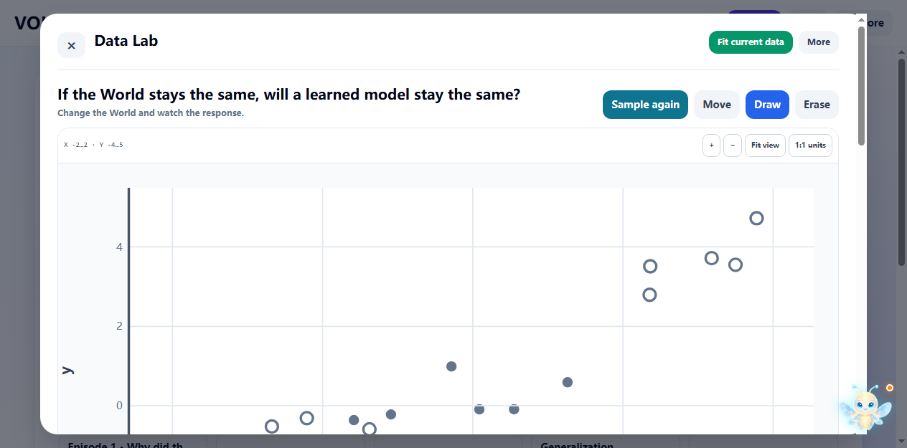
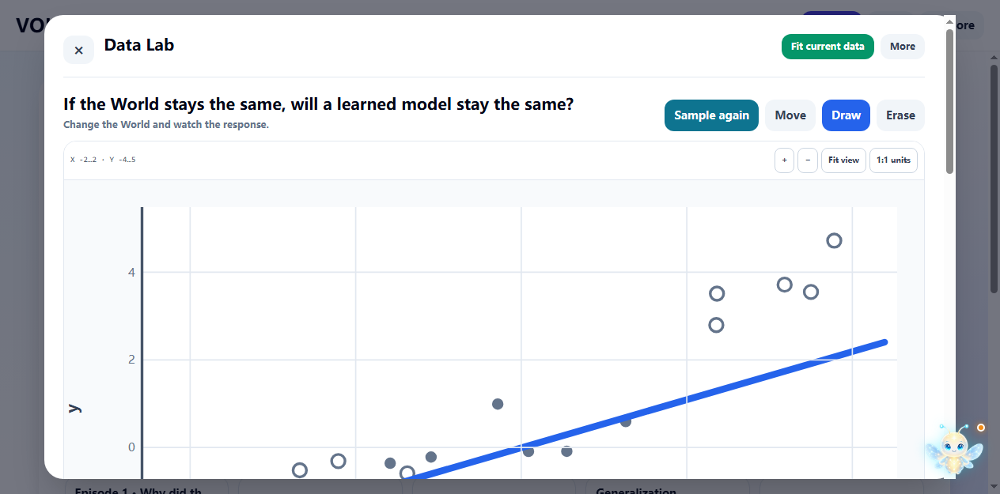
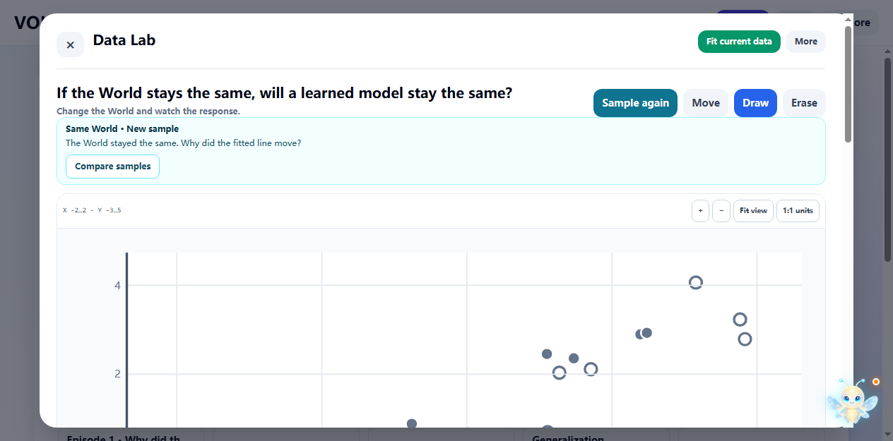
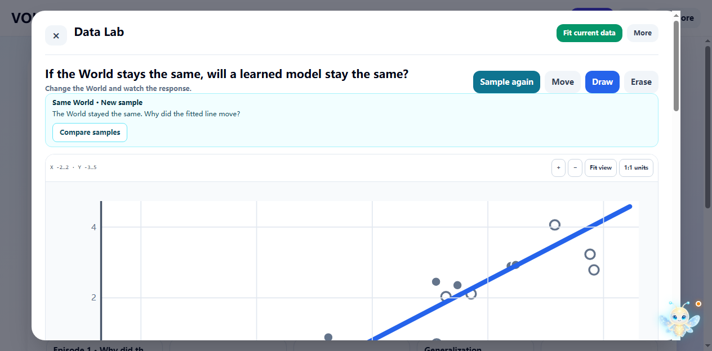
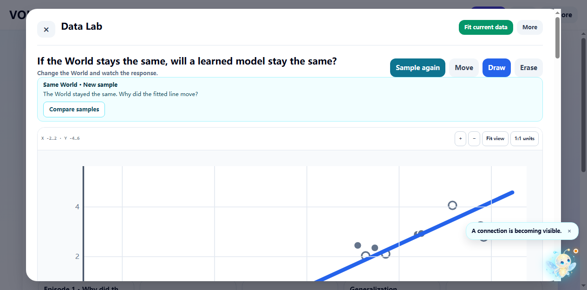
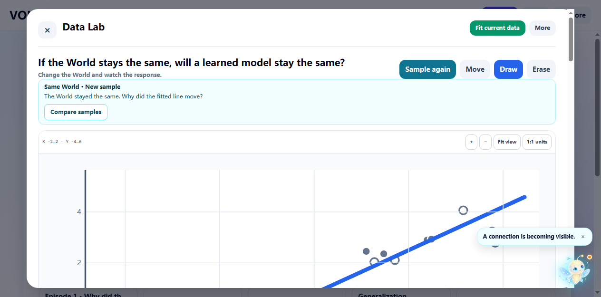

<!doctype html><meta charset="utf-8"><title>R148 reduced-motion Episode 1 evidence sequence</title><style>body{font:16px system-ui;background:#0f172a;color:#e2e8f0;margin:0;padding:24px}main{max-width:1280px;margin:auto}figure{margin:0 0 24px}img{display:block;width:100%;border-radius:12px;background:white}figcaption{padding:8px 0;font-weight:700}</style><main><h1>R148 reduced-motion Episode 1 evidence sequence</h1><figure><figcaption>reduced-01-entry.png</figcaption></figure><figure><figcaption>reduced-02-fit-a.png</figcaption></figure><figure><figcaption>reduced-03-resample.png</figcaption></figure><figure><figcaption>reduced-04-fit-b.png</figcaption></figure><figure><figcaption>reduced-05-concept.png</figcaption></figure><figure><figcaption>reduced-06-recovered.png</figcaption></figure></main>